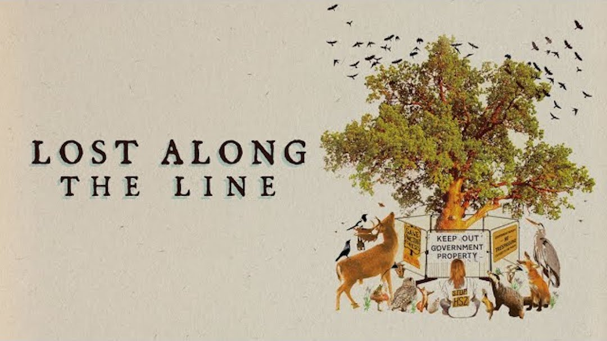
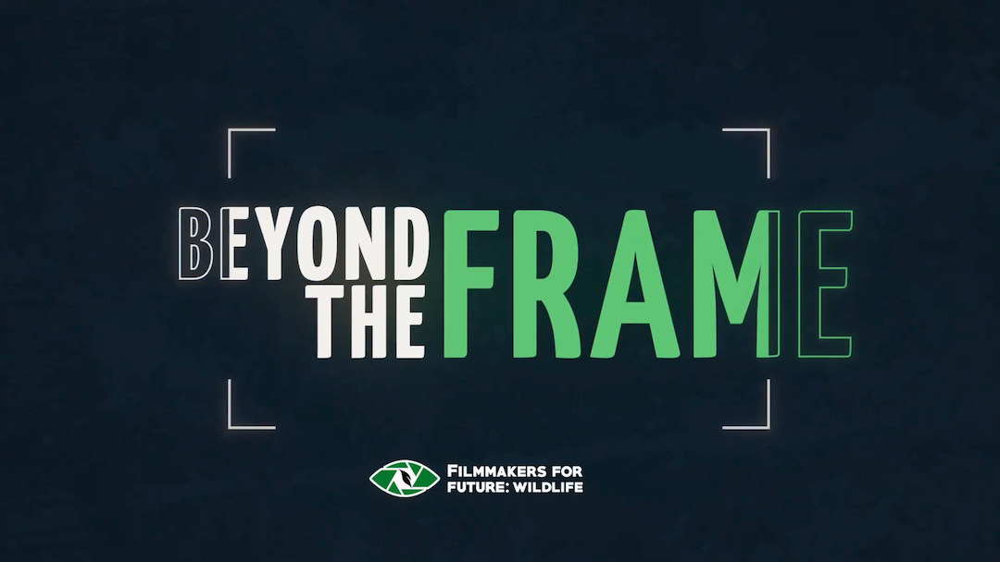
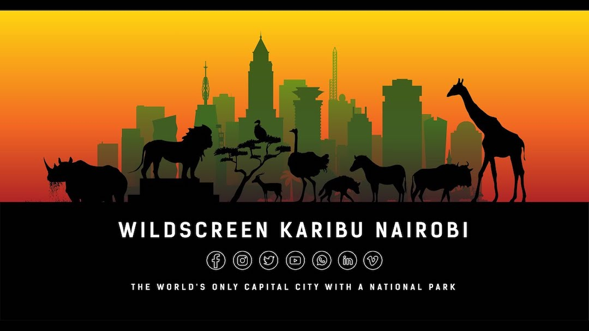

Home
About
Recent work

Lost Along the Line -Â Waterbear network

Beyond The Frame - Filmmakers For Future Wildlife

Karibu Nairobi - Wildscreen / BBC Project Songbird
Birds beyond borders
Website Build by Benjamin Ward
contact.benjamin.ward@gmail.com
Website Designed by Benjamin Ward on Webflow